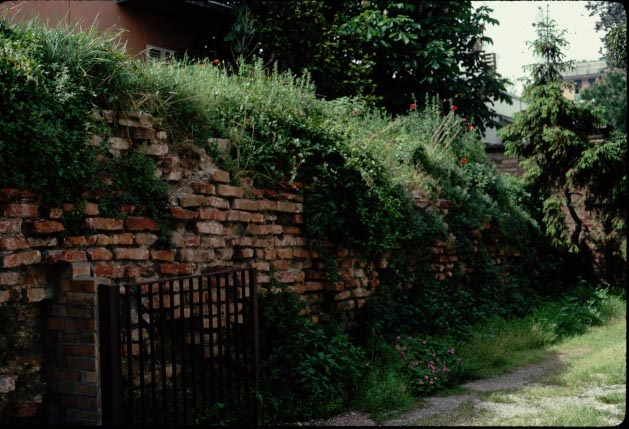
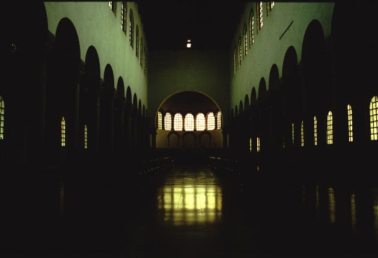

In the 430's, new walls were built around Ravenna, enclosing a larger area, by the emperor Valentinian III. The walls remained the defining boundary of Ravenna until the twentieth century, and parts of them are still visible.
Valentinian's mother, Galla Placidia, built the church dedicated to
St. John the Evangelist after she was saved from shipwreck when she
prayed
to the saint, in the 430's or 440's.

Part of the remains of the city walls built by Valentinian.

View of the interior of St. John the Evangelist (San Giovanni
Evangelista);
the roof was
reconstructed after it was destroyed by a bomb in World War II.